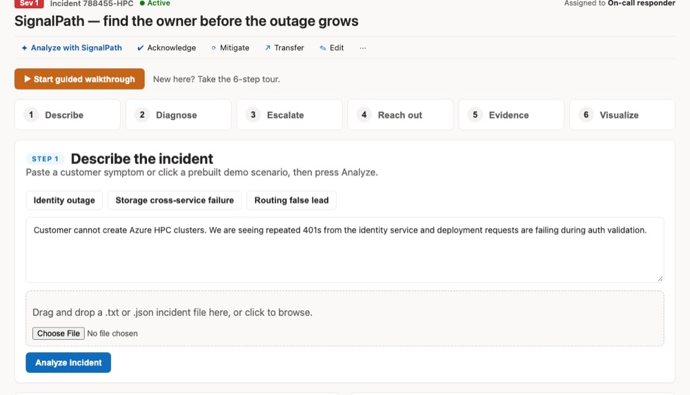
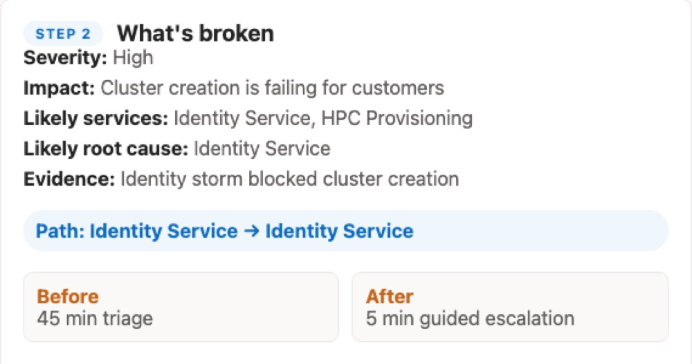
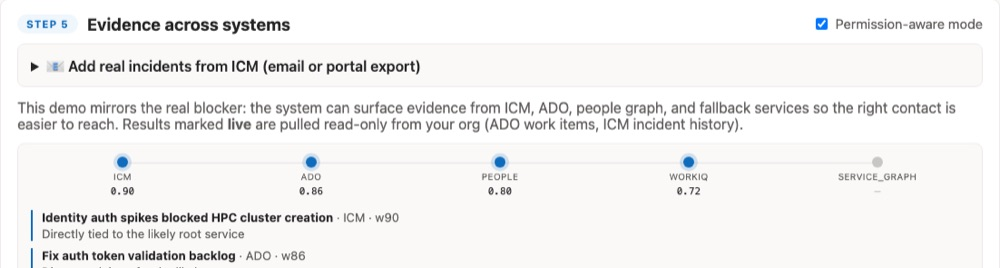
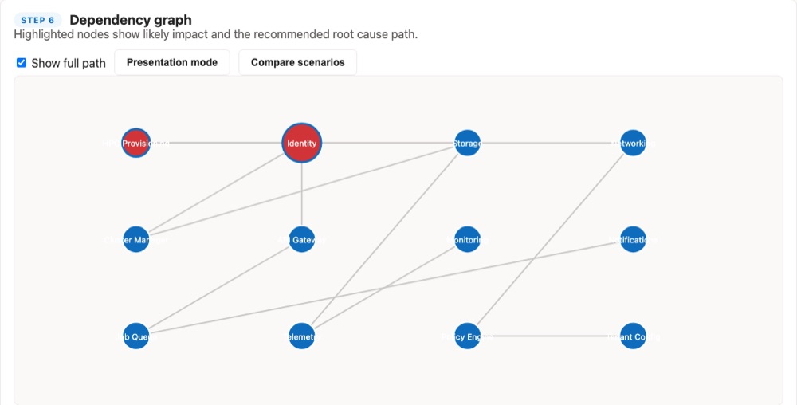

Case file · AI + DevOps
SignalPath
A zero-input IcM extension that ends the scramble to find an incident’s true owner. One click traces the service-dependency graph to the root-cause service and routes it to the right on-call engineer with a ready-to-act fix package.
§ 01 · The problem
When an outage is live, the first question is who owns it.
During a high-severity incident, time goes to working out which team owns the failure, not to fixing it. The demo frames that triage as roughly 45 minutes, and the goal as a few minutes with guided escalation.
The first name on an on-call list is not always the right one. A routing false lead is one of the three scenarios the demo walks through, next to an identity outage and a storage cross-service failure.
§ 02 · What it does
Six steps from symptom to a sent message.
The demo follows a six-step flow, with a guided tour to walk through it.
-
1. Describe
Paste a customer symptom, pick a prepared scenario, or drop in an incident file.
-
2. Diagnose
A summary of what is broken: severity, impact, likely services, and the likely root cause, with the evidence behind it.
-
3. Escalate
Ranked owners to contact, each with a confidence score and the reason they made the list.
-
4. Reach out
A drafted message for Teams, email, or a short note, ready to copy, plus backup contacts.
-
5. Evidence
Weighted signals from ICM, ADO, People Graph, and WorkIQ, with a permission-aware mode.
-
6. Visualize
A dependency graph that highlights likely impact and the root-cause path, with a presentation mode and scenario comparison.




§ 03 · Design choices
Four choices that shaped it.
-
Show the evidence.
Every recommendation carries a confidence score and the evidence behind it, from named sources.
-
Respect permissions.
A permission-aware mode, and results marked live are pulled read-only from your own org: ADO work items and ICM incident history.
-
Make the reasoning visible.
A dependency graph with the root-cause path highlighted, so a recommendation can be explained and not only trusted.
-
End with something sendable.
The last step is a drafted message you can copy, so the output is an action and not a report.
§ 04 · Under the hood
Prepared scenarios, honest about the data.
The demo runs on three prepared scenarios: an identity outage, a storage cross-service failure, and a routing false lead. The evidence shown in the demo is mocked.
Automated ICM access is not connected yet. Real incidents can be loaded by pasting an ICM notification email or an Excel or CSV export, which SignalPath detects, extracts, and uses as live ICM evidence.
§ 05 · Where it stands
A top-five hackathon build, shared as a demo.
SignalPath was built at a Microsoft intern hackathon, where the team placed in the top five of 47 teams without taking first place, and is shared as a public demo. The demo states its outcome as reducing time-to-identify from 45 minutes to just a few minutes. That is the goal it is built to show, not a measured result.
What is missing is the connection to live systems: automated ICM access.